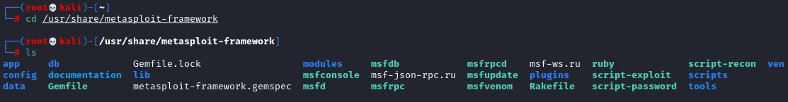
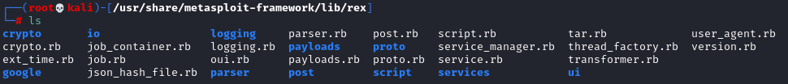
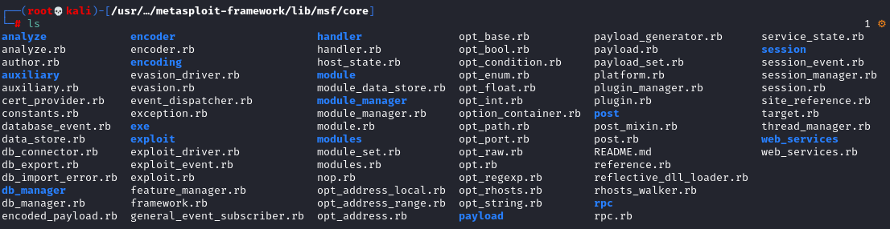
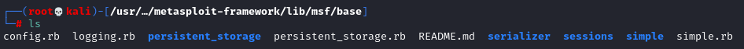

Metasploit Framework Filesystem
cd /usr/share/metasploit-framework
ls
ls

Libraries
In this directory you can find all the libraries used by metasploit. The main ones are: Rex, Msf::Core, Msf::Base
cd /usr/share/metasploit-framework/lib

• Rex library
/usr/share/metasploit-framework/lib/rex
collection of classes and modules useful for: protocols, sockets, services, encoders, text transformations, ...

• Core library
/usr/share/metasploit-framework/lib/msf/core
We can manage modules, plugins, sessions, jobs, ...

• Base library
/usr/share/metasploit-framework/lib/msf/base
Base library is developed on top of the Core library and it makes easier to interact with the framework structure. Its purpose is to provide simplified and more user-friendly APIs to improve and speed up the development
